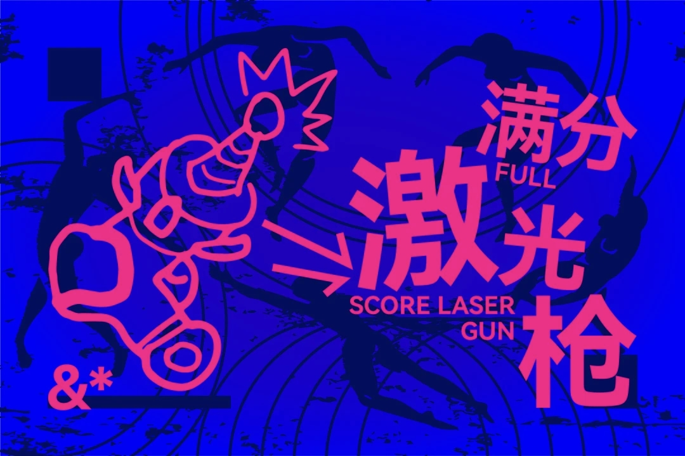

electric-poster
用电蓝的色场、洋红的大字、分层剪影和荧光线稿，把一个主题做成有张力的 2.5D 实验海报。颜色、文字、空间和印刷质感都有可执行的规则。

Style2.5D electric editorial poster
Use活动海报、数字杂志、社交封面
Core用颜色、遮挡与文字层级建立张力
Download
拿走完整 Skill
下载包保留完整目录：SKILL.md、三份风格与提示词文档、四张参考图，以及 Agent 显示配置。解压后，将 electric-poster 文件夹放入你的 Codex skills 目录。
目录结构：~/.codex/skills/electric-poster/SKILL.md
把风格拆成可以执行的规则
这个 Skill 会先整理主题、准确文字、画布比例和信息密度，再规划背景、主体文字、前景线稿与表面质感。电蓝与洋红负责对比，剪影与错位副本负责层次，局部颗粒和印刷错版负责触感。
先让标题清楚，再用遮挡、偏斜与错位制造张力。
有参考图，也能从零开始
- 没有参考图：从风格规范出发，按主题安排标题与构图。
- 一张参考图：校准文字层级、密度和空间关系，重新设计内容。
- 两到四张参考图：提取共用的配色、文字行为、线稿与印刷语言。
- 指定局部修改：按需求保留选定参考的构图，替换文字或主体。
开始使用
安装后，调用 $electric-poster，给出主题、主标题、比例和你想要的结果。可以要求输出可复制的提示词；需要直接生图时，使用环境须有可用的图像生成工具。
用 $electric-poster 做一张关于创作实验的 3:4 海报。主标题是“BUILD IN PUBLIC”，副标题是“把想法做出来”。电蓝底、洋红大字，保留清楚的文字层级。先输出可直接使用的生图提示词。
较长正文、二维码和密集的小标签适合在后续排版中补齐。Skill 会保留要求的准确文字，并说明哪些部分需要后期排版。
随包附带的风格参考
下面是 Skill 内的三张竖版参考，页首是第四张横版参考。它们用于校准视觉语言；生成时按需求选择参考，不必每次全部附上。